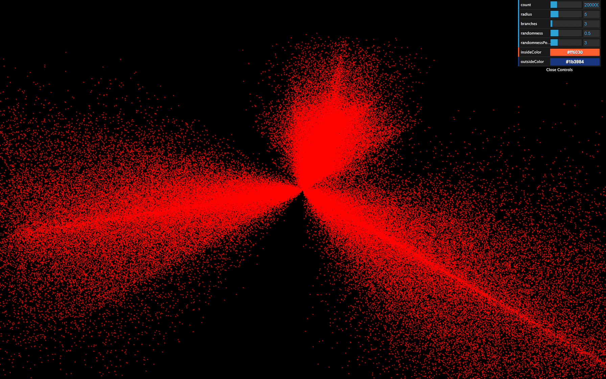
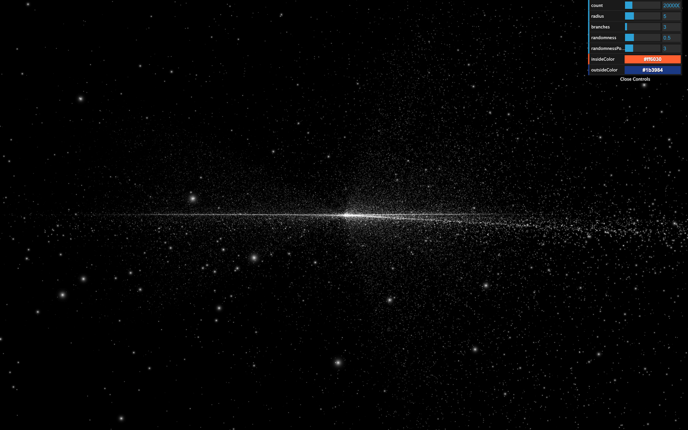

You can also use shaders with the particles. As we saw in the Particles lesson, animating each vertex of the geometry isn't an efficient solution for performance reasons. That is where the GPU comes in by animating those vertices directly in the vertex shader.
In this lesson, we are going to start with our particle galaxy. We will animate the particles in the vertex shader to make the stars rotate but at different speeds depending on the center's distance, and we will draw a pattern in the particles instead of those ugly squares.
The starter is almost the same as the Galaxy Generator lesson starter. The only difference is the spin formula is missing because we will do the spin animation in the shader.
The particles are currently using a PointsMaterial, but we need to use a ShaderMaterial if we want to write our own shaders.
Replace PointsMaterial by ShaderMaterial:
If you look at the logs, you should see two warnings telling us that the ShaderMaterial supports neither size nor sizeAttenuation. We will have to add these features on our own. For now, remove these properties:
At this exact moment, some might see the particles like tiny red dots, and some might get a black screen. That depends on how your GPU handles the particles when no size is provided. We won't waste time on this because we will give a size anyway, and everyone should see the particles.
Clearly, we need to provide our own shaders. Add the following vertexShader:

The beginning of the shader is the same as we've already seen. We update the position by using successively the modelMatrix, the viewMatrix, and the projectionMatrix. But then, we assign a new variable called gl_PointSize with 2.0 as the value.
gl_PointSize is precisely what you might think. The particles will have a 2x2 size, and you should see 2x2 particles regardless of the distance of the camera.
The unit here are fragments and if you are using a normal screen with a pixel ratio of 1, you'll get 2 pixels by 2 pixels because 1 fragment = 1 pixel. But if you are using a screen with a higher pixel ratio like a retina screen, 1 fragment will be smaller than 1 pixel and you should get smaller particles. We'll fix that later in order to get a consistent result through any pixel ratio.
Before we improve the particles size, let's change the color.
The particles are currently red because we didn't provide any fragmentShader and Three.js uses a default one with a red output.
Add the following fragment shader with a white color:
All the particles should be white.
Now is an excellent time to move the shaders to separate files before they get too long and unmanageable.
In /src/, create a shaders/, and then a galaxy/ folder inside.
Inside that folder, create a vertex.glsl file with the vertexShader property content:
And a fragment.glsl:
The Webpack configuration already supports .glsl files. We only need to import these in the JavaScript, and use them in the material:
The result should be the same.
You don't need to put the shaders in separate files, but it's good practice, and the syntax coloration might prevent you from making mistakes.
Also, if you installed a linter like suggested in a previous lesson, you'll see potential errors before refreshing.
First, we will add a base size for every particles, and we want to be able to change the value from the JavaScript. To do that, let's add the usual uniforms property to our material with a uSize uniform:
We can now retrieve the value in the vertexShader and use it in the gl_PointSize:
They appear quite big here, but they'll look smaller very soon.
In real life, stars have different sizes. Let's add some randomness. We want to associate a distinct value for each vertex. We are going to use an attribute.
Add a aScale attribute to the geometry. We already have a position, and a color attribute and we can easily add the new attribute following the same instructions:
Make sure to use 1 instead of 3 when creating the Float32Array and the BufferAttribute because this value is a float and not a vec3 like the others —we need only one value per vertex. We also named the attribute aScale with a prepended a.
You might be tempted to change the position and color attributes for aPosition and aColor, but that would result in a bug because we are using a ShaderMaterial which pre-pend code to our vertex shader and that code add something like attribute vec3 position; and attribute vec3 color;.
We can now retrieve the attribute in the vertex shader and multiply the uSize by it:
You should see particles with random sizes.
However, we have a problem with our particles. Their size depends on the screen's pixel ratio. Remember that we updated the pixel ratio of the renderer by using the following line:
If you have a screen with a pixel ratio of 1, the particles will look 2 times bigger than if you had a screen with a pixel ratio of 2.
We need a solution to get the same particle size regardless of the pixel ratio.
They are multiple ways of doing so. The easiest one is to multiply the uSize value by the pixel ratio of the renderer. We can retrieve this pixel ratio with the getPixelRatio() method:
Unhappily, this code won't work because we are creating the material before we create the renderer. To fix that, simply move the first call of generateGalaxy after the instantiating the renderer:
We now have particles that look the same regardless of the pixel ratio.
We removed the property sizeAttenuation because the ShaderMaterial does not support it. We need to apply this size attenuation on our own.
As a reminder, the size attenuation makes the particles far from the camera smaller, and the ones close to the camera bigger. That simulates the perspective.
Instead of trying to guess the formula to get the right size, we will directly go to the Three.js dependency folder and get the code that handles this part in the PointsMaterial code.
While there is a lot of code in the Three.js library folder, it's well organized and easy to navigate. Don't hesitate to spend some time in it and get use to it.
You can find the shader handling this part in /node_modules/three/src/renderers/shaders/ShaderLib/point_vert.glsl.js and it should look like this:
The only part we need is this one:
To get the size attenuation, we need to multiply gl_PointSize by this formula ( scale / - mvPosition.z )
According to Three.js, the scale is a value related to the render height. To make things manageable, we can replace it with 1.0.
The mvPosition corresponds to the position of the vertex once the modelMatrix and the viewMatrix have been applied. In our case, it's our viewPosition variable.
This might sound a little complex, but we can write it like that:
Get the camera close to the particles to see them getting bigger. We have our size attenuation.
It's time to draw a better-looking particle. Just like in the Shader Patterns lesson, we first need the UV coordinates. Sadly, we cannot send the UV from the vertex shader to the fragment shader. Remember that the vertex shader controls each particle position and a square plane facing the camera appears in place of the vertex.
The good news is that we already have access to the UV in the fragment shader with gl_PointCoord. This variable is specific to the particles.
Add it to the fragment shader to see the result:
You should see the usual UV pattern on each particle.
Now would be a good time for you to try to draw some star shapes. You can start with a disc, then a point light and why not a star shape in the cartoons or anything you want. Keep in mind that it takes practice to be able to do that and your first attempts might not get the work done but still, you'll gain experience.
To get a disc:
gl_PointCoord and the center (vec2(0.5)).0.0 if the distance is below 0.5, and 1.0 if the distance is above 0.5.Then, we use the strength for r, g, and b:
To get a diffuse point:
gl_PointCoord and the center (vec2(0.5)).2.0, so it reaches 1.0 before touching the edge.
That's better, but it still lacks realism. What we are missing here is a very intense center that dims fast.
To get a light point:
gl_PointCoord and the center (vec2(0.5)).
The good thing with that solution is that we can control how condensed the glow is with the pow() value.
We will stick with that pattern. Because the lights look smaller, let's increase the uSize a little:
Unfortunately, we are reaching performance limits for some computers, and you might experience frame rate drops. If so, reduce the number of particles or their size.
In the process, we lost the colors. The good news is that our shader partially supports these colors. We merely need to use their values.
To retrieve the color attribute, we should have written something like this in the vertex shader:
Because we are using a ShaderMaterial and not a RawShaderMaterial there's no need to. The code will be prepended once the shader is compiled. All we need to do is send it to the fragment shader. To do that, we are going to use a varying named vColor and update that varying with the color attribute:
We can then retrieve it in the fragment shader with the same varying declaration and use it in a mix(...) between black and vColor according to the strength:
Now you see the original colors.
It's time to animate. First, we are going to use the usual uTime uniform. Add it to the uniforms and update its value in the tick function:
Then we can add uTime to our shader:
The animation will be very average. We will make the stars rotate, but the closer to the center, the faster the rotation.
The following codes happen right after the modelPosition declaration in the vertex shader. As a reminder, the modelPosition is the position of the vertex after applying the position, rotation, and scale of the mesh. We must now update that variable.
Here's the process:
uTime. The furthest from the center the slower.We are going to use some trigonometry.
The rotation only occurs on the x and z axes and we can let the y value as it is, which greatly simplifies the whole thing.
First, retrieve the angle using atan(...):
atan stands for arc-tangent and you can find more about it here: https://thebookofshaders.com/glossary/?search=atan
Then, fetch the distance from the center using length() which is simple the length of the vector:
Then, we calculate an offset angle. As we said earlier, the closer to the center, the higher the angle. We also multiply that value by uTime itself multiplied by 0.2 to slow the effect down:
We then apply that angleOffset to the base angle:
Finally, we update the modelPosition on the x and z axes with cos(...) and sin(...):
While this looks great, it's not the intended result. cos(...) and sin(...) return a position on a circle of radius 1. That is why all the particles seem the rotate on a cylinder.
To fix it, we can simply multiply the cos(...) and sin(...) by the initial radius of the vertex, which we already have in distanceToCenter:
All the vertices should rotate beautifully.
If you wait for a little, you'll see that the stars seem to create a ribbon shape. It's like if the randomness doesn't work anymore on the x and z axes. That is due to the rotation formula that stretches the stars on a spin pattern.
To fix that, we can remove the randomness from the position attribute, save it in a new attribute named aRandomness. Then apply this randomness after rotating the stars in the vertex shader.
Create the attribute and store the randomness in it. Don't forget to remove the randomness from the positions:
In the vertex shader, retrieve the attribute and apply it on the xyz of the modelPosition after applying the rotation:
The result should look much better and the ribbon shape should be gone.
Reduce the randomness parameter for a better result:
You could also add the uSize uniform to the debug panel.
After a few minutes, we cannot fully distinguish the galaxy branches. You could add a reset button or slow down the speed.
Galaxies usually have a massive black hole in their center. Why not try to create one?